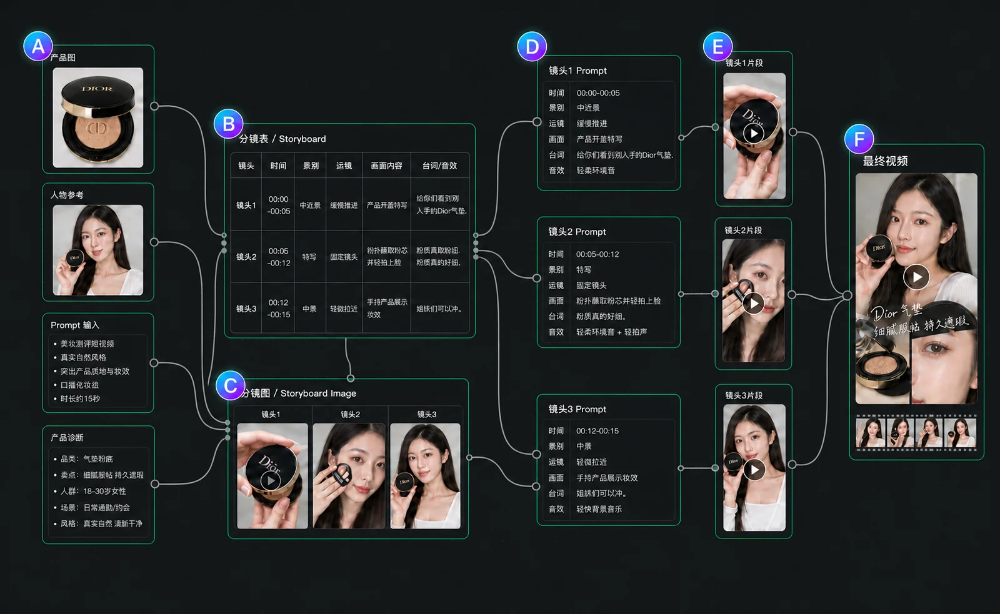

01 · 竞品路线
竞品路线：对话式 Agent vs 节点工作流
01 小云雀：Agent 式营销短视频生成流程
Agent 对话流：用户用自然语言提出目标、补充素材和确认方向，Agent 在对话中理解需求并推进后续步骤。
学习不同 Skills：系统可先学习营销短视频等任务技能，再调用对应能力完成商品诊断、热点检索、创意规划和视频生成。
输入 Prompt + 产品图片
用户先用自然语言说明任务，并上传产品图片作为视觉参考。
【任务类型】长视频创作
【生成时长】45 秒
【视频脚本需求】为 Dior 气垫粉饼制作一支竖屏 UGC 感带货短视频，采用“朋友安利”式的亲切口播风格。整体基调简约高级，但氛围轻松真实，区别于传统广告。主题是分享个人使用体验，突出产品核心卖点。
故事线：开头 5 秒手持产品快速展示包装和菱格纹设计，口播“给你们看看我刚入手的 Dior 气垫”。中间 30 秒分步展示使用过程：打开顶盖，特写粉芯和黑色粉扑；用粉扑蘸取粉底并轻拍在手背或脸部，展示细腻粉质和光泽感；快速切换妆前妆后或不同光线下的妆效。结尾 10 秒手持产品总结，鼓励购买。
关键场景：产品在自然光或室内柔光下的开盖特写；粉扑蘸粉和上妆过程的近景；妆后皮肤质感的特写。
口播风格：口语化、亲切、有感叹词，例如“哇这个粉质真的好细”“上脸就是那种很高级的妆感”“姐妹们真的可以冲”。参考图 1 作为产品外观和质感的视觉标准。
视频时长：15 秒
产品诊断
系统提炼商品卖点、人群、转化目标和视觉锚点。
- 产品：Dior 气垫粉饼，高端美妆品类
- 可视化价值：银色菱格纹开盖、粉扑蘸取粉芯、轻拍上脸后的高级光泽
- 目标人群：25-35 岁都市女性，追求精致妆容但时间有限
- 转化目标：种草 → 直接购买，高客单需要信任铺垫
- 证明形式：上妆前后对比、粉质细腻度展示
- 视觉锚点：银菱格纹顶盖、CD 标识、黑色粉扑、奶杏色粉芯
热点方向选择
系统给出可借鉴的热点赛道，并解释与商品的适配方式。
- 爆款套路：美妆博主粉膏测评
- 热度：★★★★★（hot_score: 315664）
- 赛道：美妆 · 产品测评 · 底妆
- 爆点：美妆博主 + 产品使用演示 + 口播讲解 + 高清特写 + 精致妆效呈现
- 适配原因：天然适合气垫粉饼植入，口播、上妆演示和妆效对比能连成完整带货链路
??????
?????????????????????????????????????
? ??????????????
? ??????????????
? ?????????????????
??1????? ? 30???
??????????????????????????? Dior ?????????????
??????????????????????????????
???????????? 30 ?????
??2????? ? ??????
??????????? Dior ???????????????????
????????? UGC ??????????????
????????????????????
生成 plan.md
系统把方向整理成可执行视频规划文件。
- 选题方向：闺蜜安利 · Dior 气垫开箱实测分享
- 选题优势：爆点机制、人群、依据
- 视频规格：9:16｜15 秒｜简约高级轻奢质感｜真实 UGC 种草调性
- 角色列表：28 岁都市女性，梳妆台前开箱与上脸实测
- 镜头列表：开盖特写、粉扑蘸粉、上脸轻拍、妆效展示、手持产品推荐
- 发布信息：封面、标题、话题和 CTA
直接生成最终视频
系统根据 plan.md 直接生成一条完整短视频。
- 根据创作规划生成最终成片
- 输出一条竖屏 UGC 带货短视频
02 ComfyUI：节点式视频生成工作流
节点工具流把商品图、人物参考、Prompt、分镜表和多个镜头 Prompt 拆成可连接节点， 用户可以清楚看到“输入如何流向每个镜头，再汇总成最终视频”。

02 · 功能矩阵